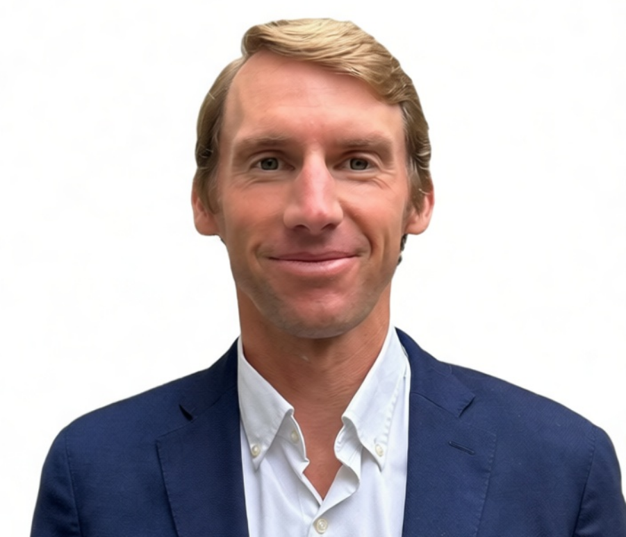
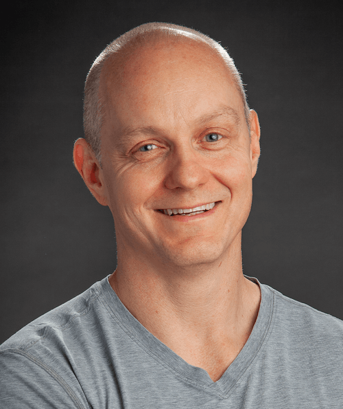

01 · Domain Expertise
60+ combined years operating inside MedTech and energy, with proven networks of surgeons, operators, and energy executives.
Reset Capital was founded on a simple conviction: durable returns in MedTech and energy don't come from financial engineering. They come from operators who have spent careers inside these industries, building companies, navigating regulatory cycles, and knowing which opportunities are real before they surface on a term sheet.
We focus on sectors where operators, not allocators, create durable returns.
MedTech M&A activity is accelerating as the industry consolidates around proven technologies and scalable platforms. Reset Capital invests in companies with strong clinical foundations and clear paths to acquisition — backed by a team with deep experience in product development, regulatory affairs, and the strategic networks that drive outcomes in this market.
AI-driven energy demand is reshaping infrastructure investment at a scale the grid wasn't built for. Reset Capital targets opportunities in natural gas and biomass, where the edge belongs to those who've spent careers inside the industry. We invest where it matters most: inside the networks that source deals before they reach the market.
60+ combined years operating inside MedTech and energy, with proven networks of surgeons, operators, and energy executives.
Active engagement through board seats and consulting roles that empower founders to make better decisions and drive higher returns.
Reset is deploying capital into generational investment opportunities: a once-in-a-decade MedTech M&A seller's market and structural energy market dislocations favoring operational investors.
Operators. Clinicians. Engineers. Builders. We built Reset Capital to cover every angle.

Managing Partner

Partner

Partner

Partner & Chief Financial Officer

Partner & Chief Operating Officer

Vice President

Associate
Our advisors bring decades of domain experience across both verticals.

Senior Advisor

Senior Advisor

MedTech Advisor
MedTech Advisor